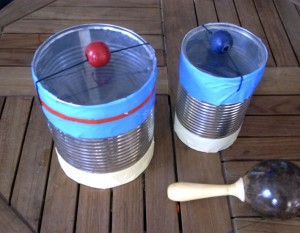

El tambor lo hemos hecho con una lata. El hilo es de goma. En el momento que tiras de la perla y la sueltas, la perla golpea el plástico ¡y hace un bum bastante fuerte!
This drum we made out of a can. The string is a rubber band. In the moment you pulling the perl and let her go: The drum makes a good sound.
Diese Trommel ist aus einer Dose. Der Faden ist ein Gummiband. Wenn man die Perle nach oben zieht und dann wieder los lässt macht sie ein tolles Geräusch, wenn sie auf das Plastik trifft.

You may also like

Toy
Mi conejo / My rabbit / Mein Häschen
Sólo con un poco de cartón hemos conseguido que Noah sea un conejo! Noah as a rabbit. Just with a little piece of paper. Noah als…
Read more →
Toy
Maraca especial / Special rattle / Besondere Rassel
¡Mira que maraca más especial! Look what a very special rattle! Guck was für eine besondere Rassel!
Read more →
Toy
Maraca de arroz / Rice rattle / Reis Rassel
Un rollo de papel pintado y lleno de arroz. Rice rattle A painted papel roll with rice inside. Reis Rassel Eine bemalte Klopapier Rolle mit Reis…
Read more →
Activity
Manos de hielo / Ice hands / Eishände
Llena unos guantes de goma con agua , gira la apertura muchas veces y ciérralos bien con una pinza. Después los dejas en el congelador el…
Read more →
Toy
Juego / Game / Spiel
Juego de bañera Primero hemos cortado diferentes siluetas (por ejemplo animales) de goma eva. A continuación, formas más pequeñas, como círculos para los ojos.... ¡cuando la…
Read more →
Activity
Tabla de surf / Surfboard / Surfbrett
Los playmobiles de Hannah y Noah tienen nuevas tablas de surf. Estan hechas de huesos de sepia que hemos encontrado en la playa. Surfboard: Hannah and…
Read more →